Capturas reales de Chromium en emuladores aislados. Cuatro perfiles ficticios adicionales permiten comprobar nombres extensos, seis programas, cuatro roles, estado activo/inactivo y revisión heredada. No se añadieron a la demo LAN compartida. Inspección técnica de Codex; aceptación visual pendiente del propietario.
La tabla conserva desplazamiento horizontal en pantallas pequeñas: las imágenes de la derecha muestran el extremo de acciones. Los textos completos se envuelven dentro de las celdas; no se sustituyen por puntos suspensivos. Los filtros permanecen fuera del desplazamiento.
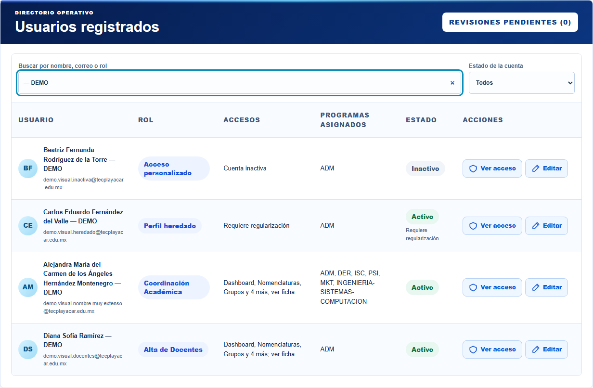
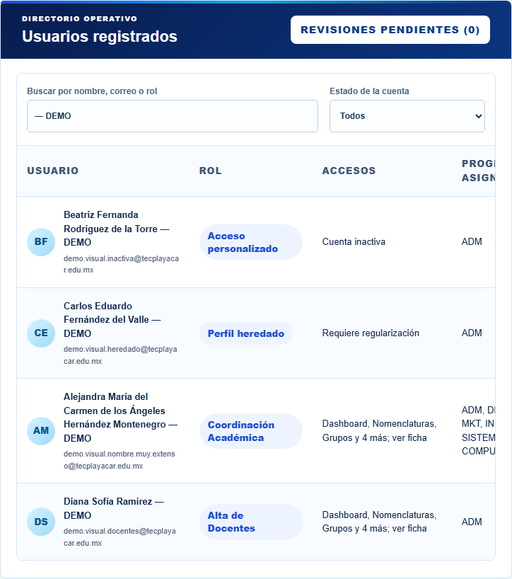
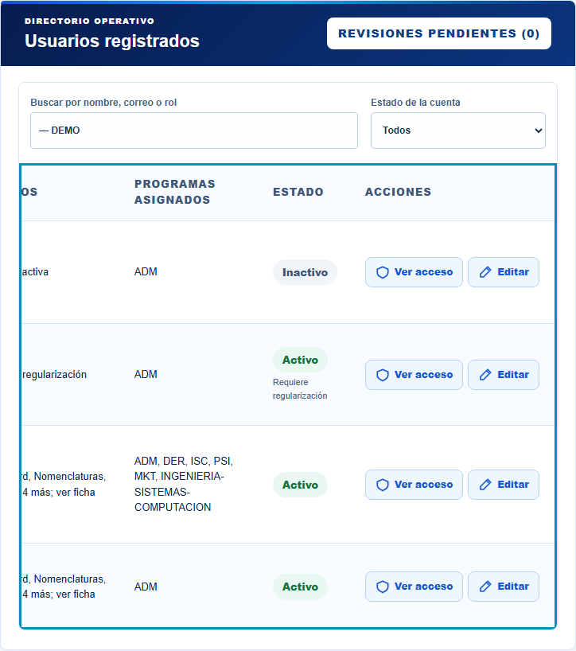
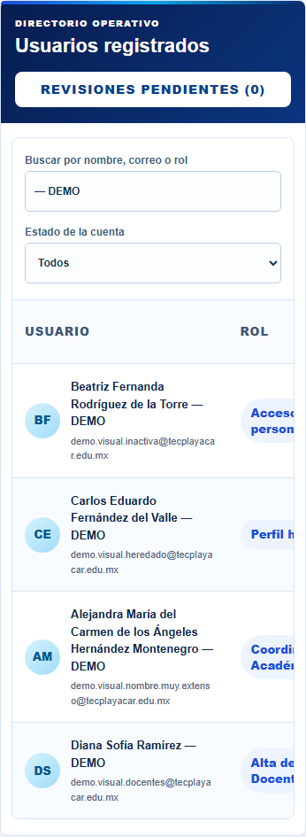
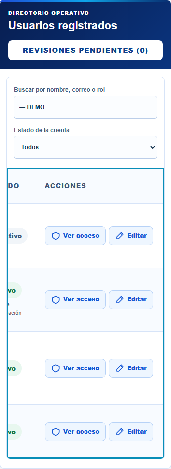
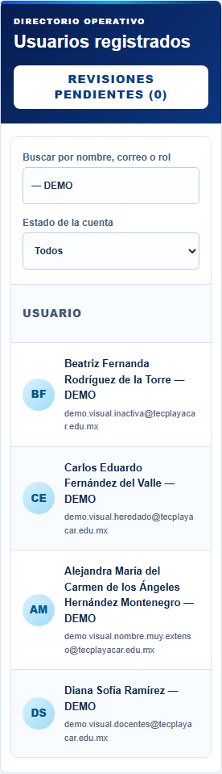
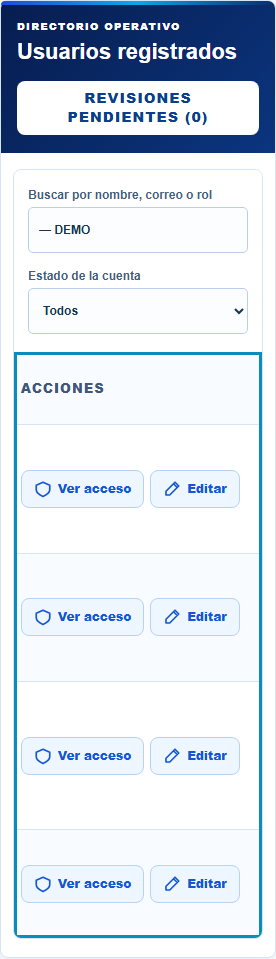
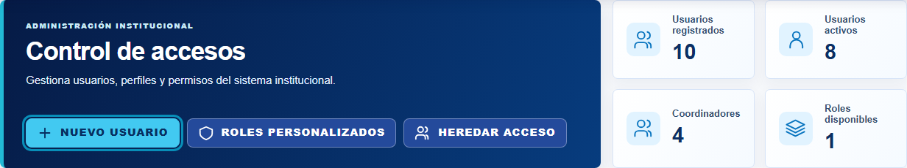
Grupos y Nomenclaturas aportan fondo de encabezado #f8fbff, texto #40577a, celdas 16 × 14 px, separadores #d7e4f8, peso 900 y badges. Ciclos aporta acciones de 38 px, radio 8 px, iconos 18 px y paleta #eef6ff / #b7d2f7 / #1457d6. El espaciado .08em se reutiliza de los sobretextos institucionales. Capturas sin modificar los módulos de referencia.
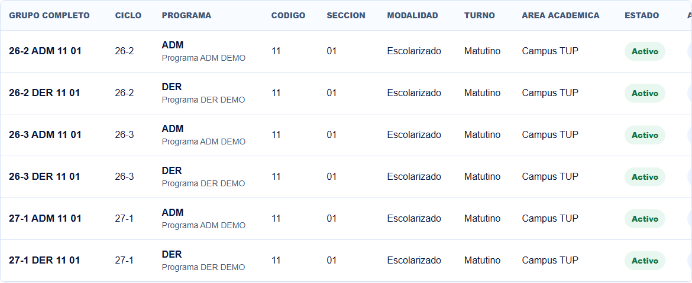
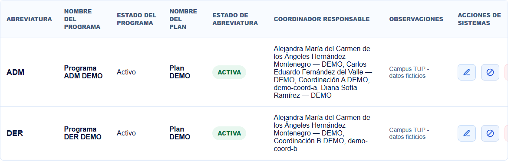
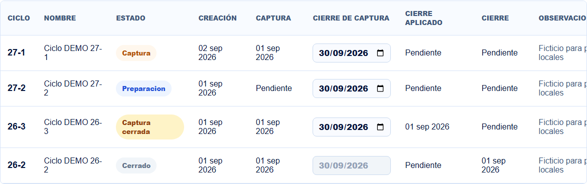